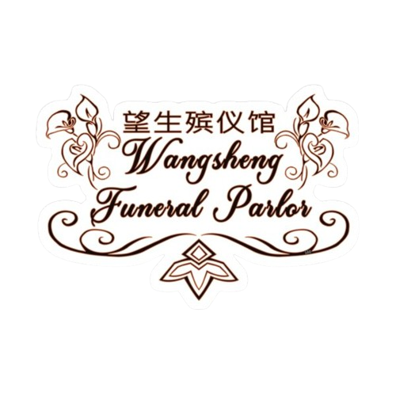

The Voice Of An Alliance Member
[LOADING TRANSCRIPT]
[.]
[..]
[...]
[CORRUPTED FILE DETECTED]
[RECOVERING DATA]
[.]
[..]
[...]
"Hello? Is this thing on? Archons, at this point I don’t even care - I’ve spent way too much time setting this thing up so I’m just gonna go ahead…
Do you love this large chunk of land we live on? Have you become so utterly bored with your life that you're looking for something with more substance than the random rock you’ve befriended outside your house? Are you willing to throw yourself blindly into dangers unthinkable to the average person on Teyvat? Have you already scheduled your funeral with the Wangsheng Funeral Parlor and have nothing left to lose? Well, do I have the organization for you! Hi there, my name is Hu Tao, and I’m not only the 77th director of the Wangsheng Funeral Parlor, but I’m also a part of your favorite pending lawsuit, The Alliance of the Stars! If you’ve been living under a Liyuen Mountain (no offense if you actually have) and somehow haven’t heard of us, we are a neutral organization charged with saving the world and keeping the peace. If you’re surprised that we’re supposed to be peacekeepers, don’t worry! I was too! So what do we do that has given us the privilege of having the Steambird oh so kindly constantly sticking its beak right up in our business? Well, we adventure, explore, stick our own noses into political conflicts, and overall just get dragged into every problem in modern Teyvat. Sounds like fun right?
So you might be asking yourself, how can we possibly handle problems across all of Teyvat? Isn’t it difficult to get from one region to another? And I, like always, bear all the knowledge you need. The Alliance of the Stars has been fortunate enough to gain enough funds (despite regions revoking them because they’re absolutely full of themselves) to build an airship! If the idea of sharing a room with multiple rabid animals sounds amusing to you, then our communal living is the perfect opportunity! Often people can’t tell the difference between members and their pets, so people aren’t allowed anywhere near our rooms for fear of a lawsuit or the Steambird producing more lies about us! The fun part about this game is guessing if this time the one of those two things happening will lead to the other coming along for the ride! We also have a functional training ground, but of course we never use it, as people prefer to fight in areas where they can cause damage to the already barely functioning ship and crew! I mean if we do actually decide to use it, we get yelled at anyway so why not spice things up? There is so much more to explore on the ship such as the kitchen that can barely fit its cook, the room you end up in to get mental health advice from a fish, and the room you end up in if you’re highly flammable while having a mental breakdown! We also have the runaway duchess of Snezhnaya hiding out on our ship soooo, go figure!
If that all sounds perfect to you then you should definitely apply! For the low, low price of begging an Inazuman fish lady to tell you why your mom doesn’t love you and possibly dying in your first hour with us, you can join us today!"
Description
The Alliance of the Stars is a neutral organization created by Sangonomiya Kokomi and Kaedehara Kazuha. This group was created with the intention of keeping Teyvat safe from any threats and overall keeping the peace. Anyone can be granted the ability to join as a representative of their own country, but they must let go of other organizations that may influence them whilst on the ship. Every member needs to be able to let go of their biases for the greater good of Teyvat. Of course, being impartial and unbiased isn’t easy, especially with such a diverse group of people. The Alliance of the Stars has accomplished many great feats, but they are not perfect. The members and leaders have gotten in trouble many times before, but not all their funding has been revoked yet! Would you like to join and make a difference?